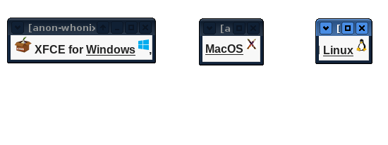

Done. That page https://www.whonix.org/wiki/Keepassxc is still a bit underdeveloped. But low priority since not many users asked about it lately.
1 Like
This user might have brought up an issue.
When users download the Tor Browser Windows Installer on this page https://www.torproject.org/download/ there is no confusion as to what button they need to click. (there is only one button for Windows users) It does the same thing as all the other Linux, Mac, Android buttons on that page. It “Installs Tor Browser”.
What do you think about this:
Idea 1
Lets place each platform icon (Linux Windows etc) above its own FAT download button?
OR
Lets find out how to add a clickable icon for each paltform. It doesn’t matter if each button downloads the same image? We could make it look similar to https://www.torproject.org/download/
Note: the download buttons don’t have to bee flashy.
Idea 2
Format the top section like https://electrum.org/#download ? Everything on that page has its place. All platforms have separation from each other (not confusing) Nice and tidy.
Oops, never addressed the above users issue, It might be a good idea to add information to https://whonix.org/wiki/Windows_Quick_Start? Or a at least a link where they can find out more info.
1 Like
Yes, nice.
Which place to modify did you have in mind?
This is very good.
Except, I think, looks like we already have this here:
- https://www.whonix.org/ and here:
- https://www.whonix.org/download/ and here:
- https://www.whonix.org/wiki/Download
Or do you mean something else? Probably so, I guess.
This has worse usability than idea 1 so I strongly prefer idea 1.
We have two versions, the easy download page: https://www.whonix.org/download/
And the advanced download page: https://www.whonix.org/wiki/Download
The advanced download is actually not too easily found. It’s linked for people who went to the wiki and then go through the top menu or through wiki documentation.
Maybe the advanced download page is actually more exposed to novice users than I imagine?
Maybe that https://www.whonix.org/wiki/Download page should look more like Idea 2?
Or can even https://www.whonix.org/wiki/Download be made like Idea 1?
Not sure you suggested that but I do think that https://www.whonix.org/wiki/Windows_Quick_Start would be better off using a different download button. A download button different from the one used on https://www.whonix.org/wiki/Main_Page or https://www.whonix.org/wiki/VirtualBox /XFCE /CLI.
Operating system specific / branded download buttons seems really cool.
You did in initial Whonix Windows Installer Documentation but then I moved to https://www.whonix.org/wiki/Dev/Virtualization_Platform#Arguments_for_keeping_VirtualBox_Support
My thinking was, the main target audience are new novice users. Not swamping new users with too much of the history and justification. Trying to take the perspective of what a new novice user would be expecting to see.
A user who is asking Difference between EXE and OVA file is probably an existing user, (more) advanced user or a user who reads more than the average user.
Moved rationale to https://www.whonix.org/wiki/Dev/Whonix-Windows-Installer#Rationale for now.
Yes, I guess at least that type of user.
Worth having a dedicated wiki page of Whonix-Windows-Installer?
https://www.whonix.org/wiki/Dev/Whonix-Windows-Installer sufficient (although /Dev centric)?
Or would also https://www.whonix.org/wiki/Whonix-Windows-Installer be useful?
Maybe add the text of the rationale or link to the rationale somewhere lower https://www.whonix.org/wiki/Windows_Quick_Start?
Reason for not being on top: new novice users don’t need to get the history, and no need to swamp them, and those who are reading a lot will end up there anyhow.
Beefed up these pages:
(preview image and description somehow not not updated by the forum software)
When i browser to the download page i expect to see a download button (or something similar) for each platform. Kinda like here https://www.whonix.org/download/. The first thing I see is the top line with all the different platforms that are supported (but they are kinda all scrunched together). It takes me a few seconds to figure out what I’m supposed to do. Click one of the icons? Or hit the download button that works for All platforms?

Since users are likely expecting a download button for their particular platform, lets give them one? How about we separate each icon and place a button (fat in relation to the text) underneath each one. Users immediately know what they need to… hit the download button underneath their platform. (Minimal information is required.) On the other hand, very nice looking bike sheds have been build on this very topic the the past. (sorry for the horrible screenshot. Just imagine a download button under each icon. Didn’t put much effort into it.)

Was thinking of consistency with other wiki pages and other projects.
Agreed.
Simple is best imo. Users should not have to put much thought into what users need to do when downloading an image. Give them only the information they need. Platform and button.
Yes. Maybe a simple download button:
(Download)
Not sure what else to do. could always wait to see if anyone opens up a support request about confusion? Then take it from there?
We could use that everywhere.
agreed. But might be a good idea for then to have a link in case they do want to see more info. I might be getting a little carried away with this 
Was kinda surprised to see that. More experienced users would also like to use the installer as well. (they are still windows users)
OK
I agree.
https://www.whonix.org/wiki/Dev/Whonix-Windows-Installer is good for advanced users. Lets add a link to rational page/section somewhere on the https://www.whonix.org/wiki/Windows_Quick_Start page for anyone that would like more detailed info/history.
I think we have to keep in mind whonix.org wiki is formatted a little differently than other projects so I don’t think we need to try to copy everyone. We’ll end up spending all our time on this. Having said that, Tor project does have their .org very well thought out. Would be good to mimic their less is more philosophy.
1 Like
I see. Makes sense.
(The idea of the many icons was to have pictograms. Something which is easier processed by the mind than text. And less likely overlooked.)
Sounds good!
To avoid law of triviality / bikeshed we can do something similar as my idea Fork XFCE Theming of another Debian based Linux distribution.
An Open Source website of a project that figured that out already could be forked for whatever we needed, whenever sensible and doable such as re-using their icons, theme, and whatnot (of course needless to say not to confuse one project for another).
torproject.org website might be Open Source. It was last time I checked if I remember right. Needs research or communication about current state.
Ok.
Then existing contents of https://www.whonix.org/wiki/Download could be moved elsewhere perhaps some /Dev page.
Yes.
1 Like
Most of these points could be added to the wiki.
1 Like
I agree with the majority of these points except where it says to setup your own VPN. That just gives you a fingerprint identifying you as it’s only you using that VPN.
It would be good to also add this to the wiki https://matt.traudt.xyz/posts/vpn-tor-not-mRikAa4h.html
It’s a blog post by a Tor developer explaining why a VPN likely doesn’t help with Tor in the majority of threat models.
2 Likes
@HulaHoop in KVM Download:
signatures URLs are :
when downloading these files from these URLs it will show “download” file name which is unusable name to be read from terminal for verification.
1 Like
Hm. I’ve just tried it now and I’m seeing the full proper file names not download. Note that auto downloading doesn’t work for me but that’s what I get when clicking the direct link.
2 Likes
for some reason its working now , thx.
Links to this page required:
Links to this page required:
Links to this page required:
i think removing /download will fix the names of the downloaded files
HulaHoop via Whonix Forum:
This might help to reason more about why verification of software signatures makes sense. For threat modeling.
As soon as the user has the signing key and understands software verification, later breaches would be detectable. In the threat model under which a user is never presented the original (or any) signing key (MITM from day 1), software signature verification of course fails.
2 Likes
I was inspired by simple.wikipedia. Let’s compare “normal” wikipedia article on Tax with simple wikipedia.
https://en.wikipedia.org/wiki/Tax
A tax (from the Latin taxo ) is a compulsory financial charge or some other type of levy imposed upon a taxpayer (an individual or legal entity) by a governmental organization in order to fund various public expenditures.[1] A failure to pay, along with evasion of or resistance to taxation, is punishable by law. Taxes consist of direct or indirect taxes and may be paid in money or as its labour equivalent. The first known taxation took place in Ancient Egypt around 3000–2800 BC.
https://simple.wikipedia.org/wiki/Tax
Tax is money that people have to pay to the government.
The government uses the money it gets from taxes to pay for things. For example, taxes are used to pay for people who work for the government, such as the military and police, provide services such as education and health care, and to maintain or build things like roads, bridges and sewers.
“Normal” wikipedia is rather hard to understand by comparison with simple wikipedia. Especially for non-native English speakers. Simple wikipedia style will influence my further writings. Using short sentences rather than long, complex sentences. One idea. One sentence. Using simple, common words rather than fancy words. At least as far as introductions, user documentation goes. For some subjects (technical details) it may not be possible or silly. Other principles / ideas for simplification welcome.
1 Like
More technical users will probably find the more complex sentences easier to understand and far more descriptive.
Maybe have the default the complex version but add a simpler section for non-technical users e.g. https://www.whonix.org/wiki/Simple/Tor, similar to simple.wikipedia.org.
1 Like
Default will be the simple version. Example:
I do recognize that what often right now is coined “simple” is still often still non-simple. Even if our audience is still only/mostly highly technical users, there is a spectrum within that audience from “barley highly technical” to “super highly technical”.
This directional goal was announced long time ago here: upcoming usability improvements that will hurt, TLS downloads, abolishing torrent downloads Might not have been implemented strictly, consistently.
Either I get older, lower attention spawns or more and and more tasks flooding or I dunno. However, when researching things, I myself often prefer to be presented simple explanation first before digging deeper.
1 Like